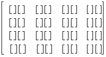
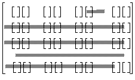

| |
Parasolid View Matrices |
| <<< Tabular Output Of Faceting | Chapters | Picking Topology >>> |
Parasolid specifies the viewing data (position, direction and type) for rendering and faceting functions using a view matrix. This chapter describes the general form of such a matrix.
A viewing transformation is needed when:
The view matrix referenced by the viewing transformation entity is constructed such that:
A perspective view is generated if the view matrix contains non-zero perspective terms.
A view matrix is a PK transformation entity, which is created from a PK_TRANSF_sf_t structure containing a 4*4 homogeneous matrix.
If the space is allocated as a 4 by 4 array in C using
(as it is in PK_TRANSF_sf_t) then in what follows, regard the matrix as:
Such a view matrix is used as a post multiplier of a homogeneous row vector:
The matrix M can be split up as:
You can use PK_TRANSF_create_view to conveniently create a view matrix that incorporates a specified view direction and, optionally, a specific eye position from which to view a model with a perspective vector. You can then use this matrix with Parasolid’s rendering functions.
The rotation matrix may be considered as the column vectors:
The rotation matrix must be orthonormal: each row/column is a unit vector and the rows/columns are each three mutually orthogonal vectors.
The determinant of the rotation matrix must be +1. The magnitude of the determinant is bound to be 1 if the orthonormal condition is satisfied, but the requirement for the determinant rules out the ability to specify reflections.
is the reciprocal of the distance between the eye point and the view plane.
If the magnitude of w is less than:
( session angle precision / session precision )
then the eye point is deemed to be at infinity and the view is a parallel view.
If the magnitude of w is greater than
( session angle precision / session precision )
then the view is a perspective view.
|
Note: The limit on the value of w below which all views are deemed to be parallel is set at a value below which Parasolid cannot detect the difference between a parallel and a perspective view. |
If P is the zero vector, then w is also zero, and the view is a parallel view.
For parallel views, the scale term, S, is the reciprocal of the scale of the picture and it must be greater than session precision.
For perspective views, the recommended way of creating a view matrix that contains perspective information is by using the function PK_TRANSF_create_view, and passing an
eye_position
to the function via its options structure. The
eye_position
is a vector that represents the position from which the part is viewed along the specified
view_direction
. All parts being rendered should be visible from the specified
eye_position
, and the
eye_position
should also be located outside the volume bounding all the parts that you are rendering. Using this function ensures that the perspective matrix is valid to within Parasolid precision.
If you need to perform the calculation of perspective information from within your application code for any reason, then you can do this as follows;
For perspective views, the perspective vector P must be parallel to the view direction (that is, anti-parallel to D) and the scale term must satisfy:
Where d = 1/w is the distance from the eye point to the view plane.
| <<< Tabular Output Of Faceting | Chapters | Picking Topology >>> |